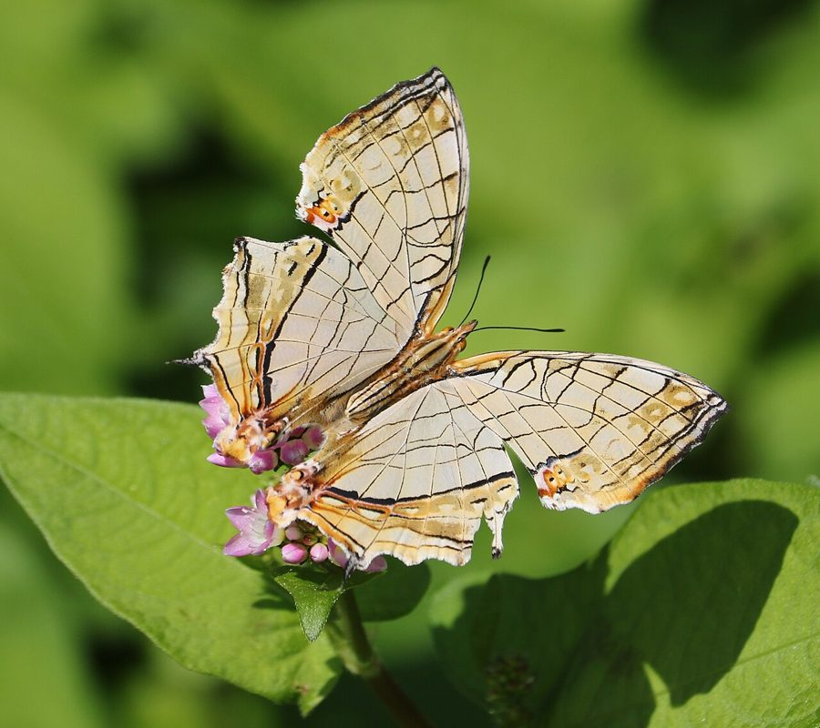

कॉमन मैपCommon Map
Cyrestis thyodamas · Nymphalidae · INS-0263

- Scientific name वैज्ञानिक नाम
- Cyrestis thyodamas Boisduval, 1846
- Family कुल
- Nymphalidae
- Hindi हिंदी
- कॉमन मैप
- Local names स्थानीय नाम
- common map, naksha titli, map butterfly
- Status here यहाँ की स्थिति
- native
- Movement आवागमन
- Resident, here all year
- Known from कहाँ दर्ज
- Others have published records from the wider Awadh–Purvanchal plain, none yet from Basti–Ayodhya अवध–पूर्वांचल से दूसरों के प्रकाशित अभिलेख, बस्ती–अयोध्या से अभी नहीं
- IUCN IUCN
- not evaluated
- Review समीक्षा
- not yet reviewed
When to look कब देखें
Expected mainly in March, April, May, June, July, August, September, October, November. मुख्यतः मार्च, अप्रैल, मई, जून, जुलाई, अगस्त, सितंबर, अक्टूबर, नवंबर में अपेक्षित।
कॉमन मैप / Common Map
Cyrestis thyodamas Boisduval, 1846 — Nymphalidae
कॉमन मैप — तराई के नदीय वनों और नम घाटियों में पाई जाने वाली एक अत्यंत सुंदर पारभासी तितली, जिसके पंखों पर मानचित्र की समोच्च रेखाओं जैसी बारीक काली लकीरें होती हैं और जो पत्तियों के नीचे पंख फैलाकर बैठती है।
Quick Identification त्वरित पहचान
| Feature | Description |
|---|---|
| Wingspan | Medium-sized among Indian nymphalids |
| Ground colour | Delicate translucent creamy-white |
| Transverse lines | Fine, sinuous parallel black lines like map contours |
| Forewing apex | Truncate and slightly scalloped |
| Hindwing tornus | Rich ochraceous-orange patch with black dots |
| Tail | Acute lobe and slender tail on hindwing vein |
| Resting posture | Wings spread completely flat beneath broad leaves |
Field tip: Look along shaded riverbanks and stream corridors. A delicate, creamy-white butterfly with contour-like black lines that glides gracefully and abruptly lands flat against the underside of an overhanging leaf is this species.
हिंदी — कैसे पहचानें: नदी के किनारों पर उड़ने वाली मलाईदार सफेद तितली जिसके पंखों पर नक्शे जैसी बारीक काली लकीरें होती हैं। यह उड़ते हुए अचानक किसी चौड़े पत्ते के नीचे उल्टी और चपटी होकर बैठ जाती है।
Morphology आकारिकी
The delicate, chart-like wing pattern of Cyrestis thyodamas gives it its evocative common name. The ground colour is semi-translucent porcelain or chalk-white, crossed from costa to dorsum on both fore and hind wings by four or five pairs of extremely fine, wavy black transverse lines that run strictly parallel, closely mimicking topographical contour lines.
The wing margins are narrowly bordered in dusky black and ochraceous orange. The apex of the forewing is squared off (truncate) rather than rounded. The hindwing tornus is produced into an acute lobe and a slender tail on the lower margin, bathed in rich ochre-orange scales containing one or two deep black eye-dots. Because the wings are exceptionally thin, the pattern on the underside is virtually identical to that of the upperside.
The head has prominent naked dark eyes and porrect white-scaled palpi. The thorax and abdomen are blackish with fine longitudinal white stripes, and the male possesses reduced, brush-like forelegs typical of the Nymphalidae.
हिंदी: इसके पंख कागज जैसे पतले और हल्के मलाईदार सफेद होते हैं, जिन पर नक्शे की लकीरों जैसी बारीक काली रेखाएं खिंची होती हैं। पिछले पंख के निचले कोने पर नारंगी रंग का धब्बा और एक पतली पूंछ होती है।
Behaviour & Ecology व्यवहार और पारिस्थितिकी
Cyrestis thyodamas possesses an unmistakable and graceful flight, sailing through the air with stiff, outstretched wings and alternating brief flaps with prolonged glides. It frequents shaded forest corridors, stream valleys, and dense riverine belts.
A unique behavioural trait is its resting habit: it almost invariably lands on the underside of broad leaves, spreading its wings completely flat against the lower leaf surface with its head pointed outwards. Males are passionate mud-puddlers, often congregating on wet river sand, mineral-laden seepage zones, and damp animal dung during hot sunny mornings.
When alarmed while mud-puddling, the butterflies rise in a swirling mass, flutter briefly in the air, and settle instantly beneath nearby overhanging leaves, disappearing completely from view.
They show marked territoriality along sunny river sandbars, with resident males repeatedly chasing rival individuals before returning to mineral-rich moisture spots.
हिंदी: यह तितली हवा में पंख फैलाकर बहुत खूबसूरती से तैरती हुई उड़ती है। जब यह बैठती है तो हमेशा पत्तों की निचली सतह पर पंख चिपकाकर उल्टी बैठती है। नर तितलियां नदी की गीली रेत पर बैठकर खनिज लवण चूसती हैं।
Life Cycle / Phenology जीवन चक्र
The egg is conical or dome-shaped, adorned with vertical ribs and a curious dentate crown-like cap at the apex. Eggs are laid on the young leaves and terminal buds of Ficus trees.
The larva is extraordinary and smooth, reddish brown with a broad green lateral stripe, armed with two long curved soft horns on the head and dorsal filaments on the body. The caterpillar feeds openly on the tender foliage of host trees.
The pupa is highly compressed laterally, suspended head-downwards from a silk pad, featuring a prominent snout-like projection formed by the fused palpi cases and resembling a withered leaf.
Generations follow one another rapidly during the monsoon and post-monsoon months, with adult butterflies persisting well into the late autumn before cooler temperatures slow down larval growth.
हिंदी: मादा तितली अंजीर कुल के पेड़ों के नए पत्तों पर अंडे देती है। इसकी इल्ली के सिर पर दो मुलायम मुड़े हुए सींग होते हैं। प्यूपा सूखे पत्ते जैसा दिखता है और टहनी से उल्टा लटका रहता है।
Host Plants or Prey आहार
Larvae feed on several species of Ficus (family Moraceae). In northern India, recorded hosts include Peepal (Ficus religiosa), Banyan (Ficus benghalensis), and Gular (Ficus racemosa) (Bingham 1905; Kehimkar 2008).
Secondary hosts include wild climbing figs growing along shaded river ravines. Larvae feed primarily on the tenderest leaf flush and newly expanding shoots.
Adults feed primarily on dissolved mineral salts from wet sand and damp riverbanks, fermented sap exuded from wounded trees, and moisture from rotting organic matter. They seldom visit ordinary garden flowers.
हिंदी: इसकी इल्लियां मुख्य रूप से पीपल, बरगद और गूलर के पेड़ों की कोमल नई पत्तियों को खाती हैं। वयस्क तितलियां नदी किनारे गीली रेत से पानी और खनिज लवण तथा पेड़ों के रस का सेवन करती हैं।
Predators / Natural Enemies शत्रु
Immature stages are preyed upon by arboreal predatory bugs, praying mantises, and birds.
Adults gliding along open riverbeds are hunted by insectivorous birds and riverine dragonflies.
When resting flat under leaves, the butterflies are largely concealed from aerial predators, but arboreal lizards and hunting spiders search leaf undersides for roosting individuals.
हिंदी: उड़ती हुई तितलियों को नदी किनारे शिकारी चिड़ियां और बड़ी व्याध-पतंगें (ड्रैगनफ्लाई) पकड़ती हैं। पत्तों के नीचे चिपकी तितलियों को छिपकलियां और मकड़ियां शिकार बना सकती हैं।
Agricultural / Human Relevance कृषि प्रासंगिकता
The Common Map is completely harmless to human interests and agriculture. It is an iconic flagship species for riverine corridor conservation, celebrated by naturalists and eco-tourists for its breathtaking wing pattern and graceful gliding flight.
Preserving riparian vegetation and undisturbed riverbanks is crucial for providing mud-puddling sites and host trees.
It acts as an aesthetic symbol of healthy, unpolluted riverine ecosystems across the northern Gangetic plains.
हिंदी: यह फसलों को कोई हानि नहीं पहुंचाती। नदी तटीय वनों और स्वच्छ नदी किनारों की रक्षा करने से इस तितली का वास बचता है। यह स्वस्थ नदी पर्यावरण की खूबसूरत पहचान है।
Expected Locally स्थानीय रूप से अपेक्षित
Not a field record. Written from published accounts for eastern Uttar Pradesh. No confirmed local sighting yet — if you have seen it, that is what the atlas needs.
अभी तक स्थानीय पुष्टि नहीं। यह विवरण प्रकाशित स्रोतों से है, किसी अवलोकन से नहीं।
GBIF holds published records from the wider Awadh–Purvanchal plain, none yet from Basti–Ayodhya. In eastern Uttar Pradesh, Cyrestis thyodamas is expected along forested rivers, terai stream valleys, and canal networks where wild figs flourish. A confirmed first record requires a clear photograph with place and date submitted through the project portal.
हिंदी: तराई के जंगलों, नहरों और नदियों के किनारे जहां गूलर और पीपल के पेड़ हैं, वहां इसके मिलने की संभावना है। स्थानीय साक्ष्य के लिए इसकी साफ तस्वीर जरूरी है।
Distribution वितरण
Global range: Distributed from the Himalayas through northern, central, and north-eastern India, extending through Myanmar and Southeast Asia to China and Japan.
In India: Mainly associated with forested river valleys and foothill streams, penetrating into the plains along riverine gallery forests (Varshney & Smetacek 2015).
In Uttar Pradesh: Recorded from terai riverine tracts and forested nullahs in northern districts.
In Basti district / eastern UP: Expected along riparian tree belts and wet watercourses.
हिंदी: यह हिमालय की तलहटी से लेकर मध्य भारत और दक्षिण-पूर्व एशिया तक पाई जाती है। उत्तर प्रदेश के तराई वनों और नदी किनारों पर इसका फैलाव है।
Research Questions शोध प्रश्न
- What ecological factors restrict Cyrestis thyodamas primarily to riparian corridors in the northern plains of Awadh?
- Does the under-leaf flat resting posture provide measurable protection against avian predators compared to upright perching?
- How far down the major river systems do seasonal dispersing individuals penetrate into the open agricultural plains?
- What specific mineral salts drive large mud-puddling congregations on sandy riverbanks?
- क्या अवध की नदियों के किनारे नम रेत पर यह तितली धूप में बैठती है?
- क्या इसके कैटरपिलर के सिर पर मुलायम सींग जैसी संरचनाएं होती हैं?
Similar Species मिलती-जुलती प्रजातियाँ
| Species | How to tell apart | हिंदी |
|---|---|---|
| Cyrestis cocles | Much paler or greyish-white with broader and more diffuse greyish transverse bands, lacking crisp thin map lines | रंग अधिक धूसर और आड़ी पट्टियां अधिक चौड़ी व धुंधली होती हैं |
| Chersonesia risa | Much smaller butterfly with bright orange-fulvous ground colour and wavy brown lines, rather than creamy white | काफी छोटा आकार और पंखों का रंग सफेद के बजाय चटक नारंगी-बादामी |
| Pseudergolis wedah | Ground colour golden brown with dark wavy lines, lacking white translucent texture and tails | सुनहरा भूरा रंग, सफेद पारभासी बनावट और पूंछ का अभाव |
Field rule: Instantly distinguished by its paper-thin creamy-white wings covered in fine map-like black lines, flat under-leaf resting posture, and graceful gliding flight.
हिंदी: कागज जैसे पतले सफेद पंख, नक्शे जैसी बारीक काली रेखाएं और पत्तों के नीचे उल्टी बैठने की आदत इसे तुरंत अलग पहचान देती है।
Taxonomy & Classification वर्गीकरण
Original description. Cyrestis thyodamas was described by Jean Baptiste Boisduval in 1846. (See GBIF / Funet).
Subspecies. Nominate subspecies Cyrestis thyodamas thyodamas occurs across northern India and the Himalayan foothills.
Family and order placement. Classified in the brush-footed butterfly family Nymphalidae, subfamily Cyrestinae, tribe Cyrestini. Characterized by paper-thin wings with intricate map-like venation lines.
IUCN status rationale. Not evaluated globally by the IUCN Red List. It is widespread in riparian forest habitats.
हिंदी: इसका वैज्ञानिक विवरण ज्यां बपतिस्त बोआदूवाल ने 1846 में दिया था। यह निम्फालिडे कुल की तितली है और भारत में सुरक्षित मानी जाती है।
Photo Gallery फोटो गैलरी
No photos yet — add field photos to media/species/common_map/ and run node scripts/sync_photos.js.
Photos needed आवश्यक फोटो
- [ ] Adult resting flat beneath broad leaf (पत्ते के नीचे पंख फैलाए तितली)
- [ ] Adult mud-puddling on wet river sand (गीली रेत पर खनिज चूसती तितली)
- [ ] Wing pattern showing fine black contour lines and orange tornus (नक्शे जैसी लकीरों वाले पंख)
References संदर्भ
- Boisduval, 1846 — see GBIF.
- Bingham, C. T. (1905). Fauna of British India, Butterflies, vol. 1. Taylor and Francis, London.
- Wynter-Blyth, M. A. (1957). Butterflies of the Indian Region. Bombay Natural History Society, Bombay.
- Kehimkar, I. (2008). The Book of Indian Butterflies. Bombay Natural History Society, Oxford University Press, Mumbai.
- Varshney, R. K. & Smetacek, P. (2015). A Synoptic Catalogue of the Butterflies of India. Butterfly Research Centre, Bhimtal.
- GBIF Occurrence Data — Cyrestis thyodamas, India (2025).
Source file: species/fauna/insects/common_map.md